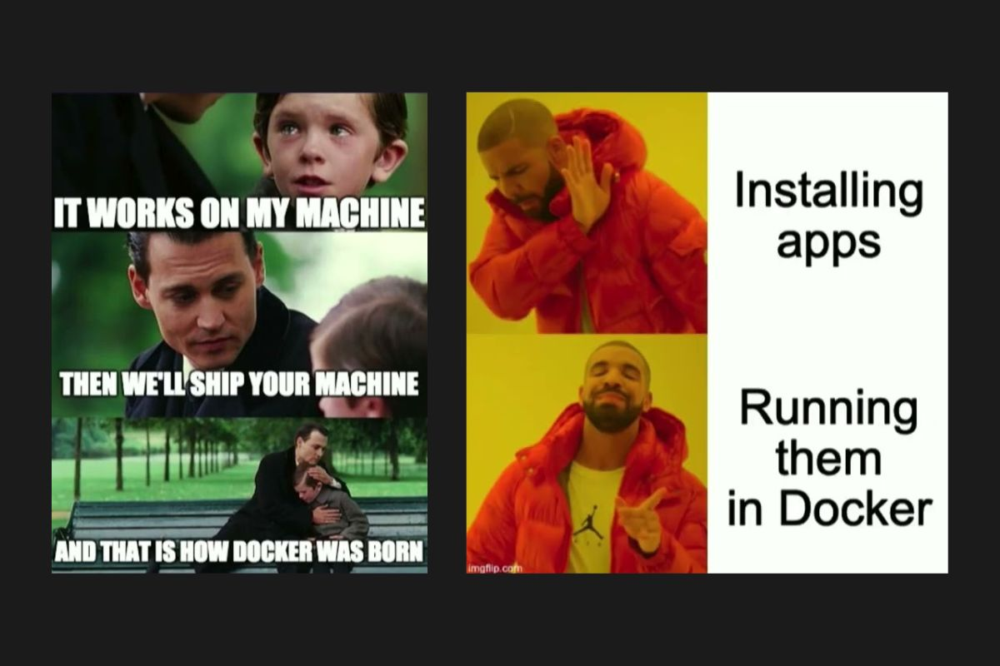

Deploying Our Fantasy Ledger to the Cloud
Previously, we built a fantasy ledger application in Java Spring Boot, whipped up a frontend and hooked it up to an in-memory SQL database all while sticking to the principles of MVC.
That’s great and all, but the only way to actually interact with our app is by running it locally, which can be a bit of a hassle 🤦 to set up every time. We want our creation to be accessible from every corner of the realm 🌎, not just a single device. Today, we’re going to fix that by dockerising our application and launching it on a cloud platform called Fly.io.
To follow along, you’ll need to:
- Install Docker
- Create a Fly.io account
- Install the Fly.io CLI
Dockerising Our App

Before we dive in, let’s take a moment to understand what Docker 🐋 is and why it’s such a game-changer. Docker was born in 2013, created by Solomon Hykes as part of a project at a company called dotCloud, which later evolved into Docker, Inc. Back in the day, developers and sysadmins had to manually SSH into servers, install dependencies, and configure runtime environments. As you can imagine, this was far from efficient and issues like “It works on my machine” were all too common.
Let’s get started. First, run the command: ./mvnw clean package -DskipTests.
This will generate a JAR file in target/*.jar. Next, we’ll create a Dockerfile to build a lightweight container that can host our application.
1# Use a JDK base image
2FROM eclipse-temurin:21-jdk-alpine AS builder
3
4# Copy the jar file into the container
5ARG JAR_FILE=target/*.jar
6COPY ${JAR_FILE} app.jar
7
8# Run the jar
9ENTRYPOINT ["java","-jar","/app.jar"]
Dockerfile using the eclipse-temurin:21-jdk-alpine base image
Now let’s build and run our Docker image locally. Execute the following commands (make sure to swap in the port number used in your application config):
1docker build -t my-springboot-app .
2docker run -p 3007:3007 my-springboot-app
Open your browser and go to localhost:<port> to verify everything is running correctly.
Deploy on Fly.io
If you haven’t done so yet, install flyctl with: curl -L https://fly.io/install.sh | sh and then log in using: flyctl auth login. Next, initialise your application with flyctl launch.It will prompt you for an app name, region, and other details then create a fly.toml configuration file 🛠️ for you.
Finally, deploy your app with: flyctl deploy. This command will build your Docker image (using your Dockerfile), push it to Fly.io and deploy it. Once done, you can access your application at: <app-name>.fly.dev!
And that wraps up our journey! I highly recommend experimenting: try adding new features to the app, switch to a persistent database or connect to Fly.io’s managed PostgreSQL service. As always, you can view the full Github code here and the hosted application here.
Thanks for following along and best of luck on your adventures!
#Java #Springboot #Crud #Backend #Tutorial #Hosting #Docker #Database